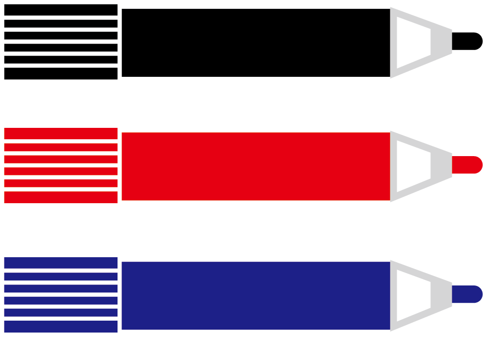

ウェブサイト制作・開発
W
E
B
S
O
N
ウェブソン
ていねいなコミュニケーションをとり、依頼者の状況、要望を的確にとらえ、
最適なウェブサイト、施策を提案・構築します。
サービス内容
なんのためにウェブサイトをつくるのでしょうか。作りたいと思う人それぞれに、目的があるはずです。
お店の売上をあげたい。自社のことを知らせたい。新規のお客様に来てほしい。などなど。あなたの状況や目的に最適な、ホームページ制作、運用、ウェブを使った施策を提案します。
Web技術に明るくなくても大丈夫です。教員経験のあるそんほんすは、あなたの意識にあるキーワードから、適切に課題を導き出し、対応策をわかりやすくご説明いたします。あなたのお店・会社のウェブ担当のつもりでご相談ください。

ホームページ制作、改修、保守運用
お客様のビジネスの状況をききとり、ホームページ制作、改修、保守運用など行います。ホームページを開設するための方法もいろいろあります。それぞれのやり方のメリット、デメリットを考慮に入れて、提案をいたします。
| ホームページ制作 オリジナルデザイン |
20万円〜 |
| ホームページ制作 テンプレート |
5万円〜 |
| 保守運用 | 1.5万円／月〜 |
| 改修、リニューアル等 | 都度お見積り |

MEO/SEO対策、SNS運用代行、コンサルティング
LINE、インスタなどのSNS、SEO,MEOなどの検索への対策など、ウェブ技術を活用した集客のお手伝いをいたします。サイトとの連動など総合的に状況を判断して、効果的な施策を提案、代行等いたします。ときには、オフライン施策も含めてのご提案もいたします。代表のそんほんすが対応するので、フットワーク軽く様々なご相談をお受けいたします。
| MEO/SEO対策 | 1万円／月〜 |
| SNSコンサル | 2万円／月〜 |
| SNS運用代行 | 3万円／月〜 |
実績
これまでの制作実績を掲載しています。案件として受けたものでも、公開ができないものもありますので、気になる方はお問い合わせください。


スキル
WEBSONで提供できるスキルを紹介します。現在も、新しい技術についても勉強しています。
-

HTML
HTMLのルールにしたがって、サイトのメッセージを適切に構造化します。そうすることで、ユーザーが検索したときに上位に表示されるようにします。
-

CSS
サイトのページを増やしたり、ちがう製作者に頼んだりしたいと思ったときに、困らないように設計します。
-

JavaScript
ウェブサイトにいろいろな動きを加えます。ユーザーの視線を誘導したり、知らせたい情報を強調したりします。
-

Wordpress
ブログを書くような形でコンテンツを更新できるようにします。既存のデザインから選んでサクッと構築することもできますし、オリジナルデザインをWordPressにして運用することもできます。
-

GatsbyJS
JAMstackという技術を使ったサイトを構築します。WordPress同様、ブログのようにコンテンツを更新できるサイトの制作もできます。サイトの表示がとても早いので、ユーザーの離脱率が下がったり、検索順位でも有利になったりします。
-
 ホワイトボード・ミーティング®
株式会社ひとまちが運営する民間の会議スキル。認定講師の資格を持っています。会議において的確で効率的な情報共有のスキルです。参考リンクは こちら
代表 そんほんすについて
２０１９年春頃から本格的にプログラミングやウェブ制作の学習にとりくみはじめました。教員経験を通して培ってきたコミュニケーション力や課題解決力をウェブ制作事業によって社会に還元したいという思いが募り、現在副業でウェブ制作・開発にとりくんでいます。